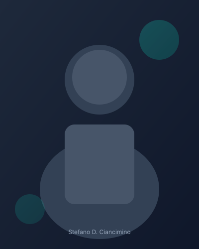

Professionista orientato a sicurezza, efficienza operativa e innovazione tecnologica.

Fraud & Risk Analyst · Blockchain Researcher · Customer Operations Specialist
Professionista con oltre otto anni di esperienza in analisi antifrode, gestione del rischio, blockchain, customer operations e tecnologia. Ho costruito la mia carriera presso PayPal, dove ho affinato competenze investigative e analitiche in contesti ad alto impatto.
Oggi unisco la mia expertise in risk management con la ricerca blockchain e l'automazione AI, per aiutare team e organizzazioni a migliorare sicurezza, efficienza operativa e qualità del servizio.
Capacità analitiche, investigative e forte collaborazione in team dinamici. Parlo Italiano (madrelingua) e Inglese (C1 fluente).
I valori che guidano il mio approccio al lavoro e alla consulenza.
Proteggere utenti e organizzazioni attraverso analisi rigorose e prevenzione proattiva.
Decisioni basate su dati, pattern recognition e investigazione metodica.
Lavoro efficace in team cross-functional con comunicazione chiara ed empatia.
Esplorazione continua di blockchain e AI per ottimizzare processi operativi.
IPSAR Molinari
Formazione nel settore hospitality premium, base per la carriera in customer operations.
Università di Palermo
Approfondimento in economia e gestione, competenze trasferibili in operations e risk.